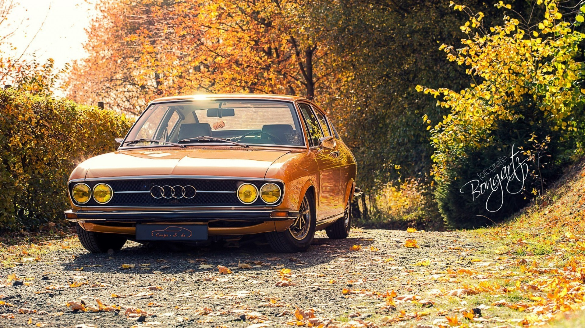

History
Birth of the company and its name
Automobile company Wanderer was originally established in 1885, later becoming a branch of Audi AG. Another company, NSU, which also later merged into Audi, was founded during this time, and later supplied the chassis for Gottlieb Daimler's four-wheeler.
On 14 November 1899, August Horch (1868–1951) established the company A. Horch & Cie. in the Ehrenfeld district of Cologne. In 1902, he moved with his company to Reichenbach im Vogtland. On 10 May 1904, he founded the August Horch & Cie. Motorwagenwerke AG, a joint-stock company in Zwickau (State of Saxony).
After troubles with Horch chief financial officer, August Horch left Motorwagenwerke and founded in Zwickau on 16 July 1909, his second company, the August Horch Automobilwerke GmbH. His former partners sued him for trademark infringement. The German Reichsgericht (Supreme Court) in Leipzig,eventually determined that the Horch brand belonged to his former company.
Since August Horch was prohibited from using "Horch" as a trade name in his new car business, he called a meeting with close business friends, Paul and Franz Fikentscher from Zwickau. At the apartment of Franz Fikentscher, they discussed how to come up with a new name for the company. During this meeting, Franz's son was quietly studying Latin in a corner of the room. Several times he looked like he was on the verge of saying something but would just swallow his words and continue working, until he finally blurted out, "Father – audiatur et altera pars... wouldn't it be a good idea to call it audi instead of horch?""Horch!" in German means "Hark!" or "hear", which is "Audi" in the singular imperative form of "audire" – "to listen" – in Latin. The idea was enthusiastically accepted by everyone attending the meeting.On 25 April 1910 the Audi Automobilwerke GmbH Zwickau (from 1915 on Audiwerke AG Zwickau) was entered in the company's register of Zwickau registration court.
The first Audi automobile, the Audi Type A 10/22 hp (16 kW) Sport-Phaeton, was produced in the same year,followed by the successor Type B 10/28PS in the same year.
Audi started with a 2,612 cc inline-four engine model Type A, followed by a 3,564 cc model, as well as 4,680 cc and 5,720 cc models. These cars were successful even in sporting events. The first six-cylinder model Type M, 4,655 cc appeared in 1924.
August Horch left the Audiwerke in 1920 for a high position at the ministry of transport, but he was still involved with Audi as a member of the board of trustees. In September 1921, Audi became the first German car manufacturer to present a production car, the Audi Type K, with left-handed drive.Left-hand drive spread and established dominance during the 1920s because it provided a better view of oncoming traffic, making overtaking safer when driving on the right.
AUDI cars


Technology
- Audi AI
Audi AI is a driver assist feature offered by Audi.
The company's stated intent is to offer fully autonomous driving at a future time, acknowledging that legal, regulatory and technical hurdles must be overcome to achieve this goal.
On 4 June 2017, Audi stated that its new A8 will be fully self-driving for speeds up to 60 km/h using its Audi AI. Contrary to other cars, the driver will not have to do safety checks such as touching the steering wheel every 15 seconds to use this feature.
The Audi A8 will therefore be the first production car to reach level 3 autonomous driving, meaning that the driver can safely turn their attention away from driving tasks, e.g. the driver can text or watch a movie. Audi will also be the first manufacturer to use a 3D Lidar system in addition to cameras and ultrasonic sensors for their AI.
- Bodyshells
Audi produces 100% galvanised cars to prevent corrosion,and was the first mass-market vehicle to do so, following introduction of the process by Porsche, c. 1975. Along with other precautionary measures, the full-body zinc coating has proved to be very effective in preventing rust.
The body's resulting durability even surpassed Audi's own expectations, causing the manufacturer to extend its original 10-year warranty against corrosion perforation to currently 12 years (except for aluminium bodies which do not rust).
- Space Frame
Audi introduced a new series of vehicles in the mid-1990s and continues to pursue new technology and high performance.
An all-aluminium car was brought forward by Audi, and in 1994 the Audi A8 was launched, which introduced aluminium space frame technology (called Audi Space Frame or ASF) which saves weight and improves torsion rigidity compared to a conventional steel frame.
Prior to that effort, Audi used examples of the Type 44 chassis fabricated out of aluminium as test-beds for the technique.
The disadvantage of the aluminium frame is that it is very expensive to repair and requires a specialized aluminium bodyshop.
The weight reduction is somewhat offset by the quattro four-wheel drive system which is standard in most markets. Nonetheless, the A8 is usually the lightest all-wheel drive car in the full-size luxury segment, also having best-in-class fuel economy.The Audi A2, Audi TT and Audi R8 also use Audi Space Frame designs.
- Drivetrains
*-Layout-
For most of its lineup (excluding the A3, A1, and TT models), Audi has not adopted the transverse engine layout which is typically found in economy cars (such as Peugeot and Citroën), since that would limit the type and power of engines that can be installed.
To be able to mount powerful engines (such as a V8 engine in the Audi S4 and Audi RS4, as well as the W12 engine in the Audi A8L W12), Audi has usually engineered its more expensive cars with a longitudinally front-mounted engine, in an "overhung" position, over the front wheels in front of the axle line - this layout dates back to the DKW and Auto Union saloons from the 1950s.
But while this allows for the easy adoption of all-wheel drive, it goes against the ideal 50:50 weight distribution.
In all its post Volkswagen-era models, Audi has firmly refused to adopt the traditional rear-wheel drive layout favored by its two archrivals Mercedes-Benz and BMW, favoring either front-wheel drive or all-wheel drive.
The majority of Audi's lineup in the United States features all-wheel drive standard on most of its expensive vehicles (only the entry-level trims of the A4 and A6 are available with front-wheel drive), in contrast to Mercedes-Benz and BMW whose lineup treats all-wheel drive as an option.
BMW did not offer all-wheel drive on its V8-powered cars (as opposed to crossover SUVs) until the 2010 BMW 7 Series and 2011 BMW 5 Series, while the Audi A8 has had all-wheel drive available/standard since the 1990s.
Regarding high-performance variants, Audi S and RS models have always had all-wheel drive, unlike their direct rivals from BMW M and Mercedes-AMG whose cars are rear-wheel drive only (although their performance crossover SUVs are all-wheel drive).
Audi has recently applied the quattro badge to models such as the A3 and TT which do not use the Torsen-based system as in prior years with a mechanical center differential, but with the Haldex Traction electro-mechanical clutch AWD system.
*-Engines-
Prior to the introduction of the Audi 80 and Audi 50 in 1972 and 1974, respectively, Audi had led the development of the EA111 and EA827 inline-four engine families.
These new power units underpinned the water-cooled revival of parent company Volkswagen (in the Polo, Golf, Passat and Scirocco), whilst the many derivatives and descendants of these two basic engine designs have appeared in every generation of VW Group vehicles right up to the present day.
In the 1980s, Audi, along with Volvo, was the champion of the inline-five cylinder, 2.1/2.2 L engine as a longer-lasting alternative to more traditional six-cylinder engines.
This engine was used not only in production cars but also in their race cars.
The 2.1 L inline five-cylinder engine was used as a base for the rally cars in the 1980s, providing well over 400 horsepower (300 kilowatts) after modification.
Before 1990, there were engines produced with a displacement between 2.0 L and 2.3 L. This range of engine capacity allowed for both fuel economy and power.
For the ultra-luxury version of its Audi A8 fullsize luxury flagship sedan, the Audi A8L W12, Audi uses the Volkswagen Group W12 engine instead of the conventional V12 engine favored by rivals Mercedes-Benz and BMW.
The W12 engine configuration (also known as a "WR12") is created by forming two imaginary narrow-angle 15° VR6 engines at an angle of 72°, and the narrow angle of each set of cylinders allows just two overhead camshafts to drive each pair of banks, so just four are needed in total.
The advantage of the W12 engine is its compact packaging, allowing Audi to build a 12-cylinder sedan with all-wheel drive, whereas a conventional V12 engine could have only a rear-wheel drive configuration as it would have no space in the engine bay for a differential and other components required to power the front wheels. In fact, the 6.0 L W12 in the Audi A8L W12 is smaller in overall dimensions than the 4.2 L V8 that powers the Audi A8 4.2 variants.
The 2011 Audi A8 debuted a revised 6.3-litre version of the W12 (WR12) engine with 500 PS (370 kW; 490 hp).
*-Fuel Stratified Injection-
New models of the A3, A4, A6 and A8 have been introduced, with the ageing 1.8-litre engine now having been replaced by new Fuel Stratified Injection (FSI) engines. Nearly every petroleum burning model in the range now incorporates this fuel-saving technology.
*-Direct-Shift Gearbox-
In 2003, Volkswagen introduced the Direct-Shift Gearbox (DSG), a type of dual-clutch transmission.
It is a type of automatic transmission, drivable like a conventional torque converter automatic transmission.
Based on the gearbox found in the Group B S1, the system includes dual electro-hydraulically controlled clutches instead of a torque converter.
This is implemented in some VW Golfs, Audi A3, Audi A4 and TT models where DSG is called S-Tronic.
- LED daytime running lights
Beginning in 2005, Audi has implemented white LED technology as daytime running lights (DRL) in their products.
The distinctive shape of the DRLs has become a trademark of sorts. LEDs were first introduced on the Audi A8 W12, the world's first production car to have LED DRLs, and have since spread throughout the entire model range. The LEDs are present on some Audi billboards.
Since 2010, Audi has also offered the LED technology in low- and high-beam headlights.
- Multi Media Interface
Starting with the 2003 Audi A8, Audi has used a centralised control interface for its on-board infotainment systems, called Multi Media Interface (MMI). It is essentially a rotating control knob and 'segment' buttons – designed to control all in-car entertainment devices (radio, CD changer, iPod, TV tuner), satellite navigation, heating and ventilation, and other car controls with a screen.
The availability of MMI has gradually filtered down the Audi lineup, and following its introduction on the third generation A3 in 2011, MMI is now available across the entire range.
It has been generally well received, as it requires less menu-surfing with its segment buttons around a central knob, along with 'main function' direct access buttons – with shortcuts to the radio or phone functions. The colour screen is mounted on the upright dashboard, and on the A4 (new), A5, A6, A8, and Q7, the controls are mounted horizontally.
- Synthetic fuels
Audi has assisted with technology to produce synthetic diesel from water and carbon dioxide.
Audi calls the synthetic diesel E-diesel. It is also working on synthetic gasoline (which it calls E-gasoline).
- Logistics
Audi uses scanning gloves for parts registration during assembly, and automatic robots to transfer cars from factory to rail cars.
Models
Current model range


 Electric vehicles
Electric vehicles
- Audi is planning an alliance with the Japanese electronics giant Sanyo to develop a pilot hybrid electric project for the Volkswagen Group.
The alliance could result in Sanyo batteries and other electronic components being used in future models of the Volkswagen Group.
Concept electric vehicles unveiled to date include the Audi A1 Sportback Concept,Audi A4 TDI Concept E,and the fully electric Audi e-tron Concept Supercar.
classic cars
